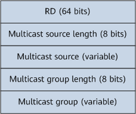
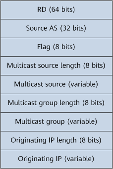
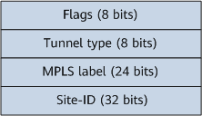

Control Plane of IP Multicast over SD-WAN
SD-WAN EVPN is a VPN solution that extends the existing EVPN technology to separate the overlay service network from the underlay transport network. To implement Layer 3 multicast in this scenario, some NG MVPN mechanisms must be introduced on the control plane so that multicast routing information can be transmitted on the SD-WAN EVPN. Multicast entries can then be established on the SD-WAN EVPN to guide multicast data forwarding.
Basic Concepts of IP Multicast over SD-WAN
Basic concepts of IP multicast over SD-WAN include:
- NG MVPN: An NG MVPN is a new framework designed to transmit IP multicast traffic across a BGP VPN. An NG MVPN uses BGP to transmit signaling information, and uses PIM-SM, PIM-SSM, P2MP TE, or mLDP to transmit data. The NG MVPN enables unicast and multicast services to coexist in the same VPN architecture.
- A receiver PE: On an NG MVPN, a PE can be either a sender or receiver PE. A receiver PE is connected to multicast receivers.
- A sender PE: A sender PE is connected to a multicast source.
Introduction to NG MVPN
NG MVPN can be deployed to address multicast service issues related to traffic congestion, transmission reliability, and data security. Figure 1 shows the typical networking involved in IP multicast over SD-WAN.
The IP multicast over SD-WAN solution has the following advantages:
- The BGP RR mechanism is introduced so that each site only needs to establish a BGP connection with the RR.
- Multicast SD-WAN allows MVPN to be deployed on the basis of unicast, simplifying overlay signaling exchange.
- A replication point is statically specified. Leaf nodes join the replication point according to static RPF routes and receive data from the root node through this point. This reduces the replication pressure on the root node.
PE1 functions as the source site, and PE2 and PE3 function as receiver sites. The next hop of each static RPF route is specified as the replication point at the receiver sites. After receiving multicast join requests, PE2 and PE3 send BGP MVPN Type 8 routes to the replication point, which then dynamically learns the route to the source site and sends the BGP MVPN Type 8 routes to the source site.
BGP MVPN Peer Establishment and Route Transmission
MVPN member auto-discovery
On an SD-WAN-based NG MVPN, each leaf node discovers other leaf nodes on the same MVPN through a process called MVPN member auto-discovery. An NG MVPN implements this process through BGP, which defines the BGP-MVPN address family to support MVPN member auto-discovery. After the BGP-MVPN address family is configured on leaf nodes, they can automatically negotiate to establish BGP peer relationships in the BGP-MVPN address family, becoming BGP MVPN peers.
The implementation is as follows: Leaf nodes on the same MVPN send BGP Update messages to each other to exchange MVPN information, which is carried in the network layer reachability information (NLRI) field of the BGP Update messages. The NLRI carrying MVPN information is also called MVPN NLRI. Figure 2 describes the NLRI format.
Table 1 describes the fields in an MVPN NLRI.
Field |
Description |
|---|---|
Route type |
Type of an MVPN route. For details, see Table 2. |
Length |
Length of the Route type specific field in the MVPN NLRI. |
Route type specific |
Information about an MVPN route. The length of this field is variable due to different types of MVPN routes containing different information. For details, see Table 2. |
Table 2 describes MVPN NLRI types and functions.
Route Type |
Name |
Function |
Route Type Specific Field Format |
Remarks |
|---|---|---|---|---|
1 |
Intra-AS I-PMSI A-D route |
It is mainly used for intra-AS MVPN member auto-discovery and is initiated by each leaf node with MVPN configured. |
Field description:
|
Type 1 and Type 5 routes are called MVPN A-D routes, which are used to automatically discover MVPN members. After leaf nodes on the same MVPN exchange Type 1 routes, they automatically establish a BGP MVPN peer relationship. |
5 |
Source Active A-D route |
It is used by a leaf node to notify other leaf nodes on the MVPN of multicast source information when it discovers new C-multicast (S, G) information. |
 Field description:
|
|
8 |
Leaf Tree Join route |
It is used in the (*, G) and (S, G) scenarios.
|
 Field description:
|
Type 8 routes are used to initiate VPN user join requests and guide the generation of multicast entries. |
The PMSI Tunnel attribute carries SD-WAN tunnel information used for SD-WAN tunnel establishment. Table 3 describes this attribute. On an NG MVPN, the sender PE sets up the SD-WAN tunnel, and is therefore responsible for originating the PMSI Tunnel attribute. This attribute is carried in an Intra-AS I-PMSI A-D route to the receiver PE.
Packet format |
Field |
Description |
|---|---|---|
 |
Flags |
Flags field. Currently, this field can only be set to 0. |
Tunnel type |
Tunnel type. Currently, this field can only be set to 200, which indicates the SD-WAN tunnel type. |
|
MPLS label |
MPLS labels are used for VPN tunnel multiplexing. Currently, tunnel multiplexing is not supported. |
|
Site-ID |
A globally unique identifier of a site on an SD-WAN EVPN. Generally, a site ID is a string of digits. |
MVPN Target
- Export MVPN target: After an export MVPN target is configured for an MVPN instance on a local leaf node, this target is advertised along with an MVPN A-D route.
- Import MVPN target: After receiving an MVPN A-D route from another leaf node, the local leaf node checks the export MVPN target of the route. If this target matches the import MVPN target of a VPN instance, the local leaf node accepts the MVPN A-D route and records the sender as an MVPN member. Otherwise, the local leaf node drops the MVPN A-D route.

If no MVPN target is configured, the MVPN uses the VPN target of the unicast VPN by default. In scenarios where the MVPN and unicast VPN share the same network topology, there is no need to configure an MVPN target. In other scenarios, configuring an MVPN target is required.